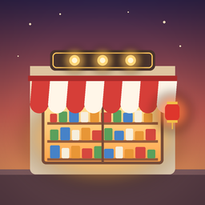

经营一家连锁超市：摆货架、补货、开收银台、招店员，按顺序接手六家门店，再去挑战无尽的新门店。
Run a chain of neighbourhood grocery stores: lay out the shelves, keep them stocked, open the tills, hire staff, and take over six stores one after another before the endless challenge.
怎么补货？ 货架快空时头顶会出现「补货」按钮，点它或点货架，在信息卡里选「补满」。雇了理货员以后会自动补货。
How do I restock? Tap the orange restock button above a shelf (or the shelf itself) and choose 补满 (fill up). Stockers do it for you once hired.
进度存在哪里？ 只存在你的设备上，营业中途也会自动保存，下次打开从同一时刻接着玩。
Where is my progress? On your device only. It is saved as you play, and the game reopens where you left it.
想换一家店或重新开始？ 「经营」页最下面的连锁门店列表可以前往任何已解锁的门店，从第 1 天开始；奖章和店长等级会保留。
Switch stores or start over? The store list at the bottom of the 经营 (Manage) tab opens any unlocked store from day 1; medals and manager level are kept.
问题和建议请发邮件 / Questions and feedback: jiezhou0731@gmail.com